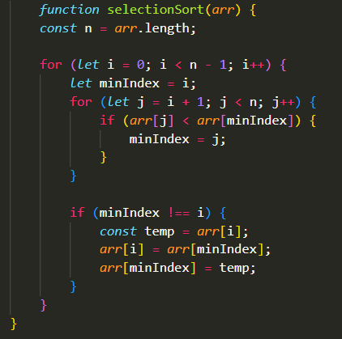
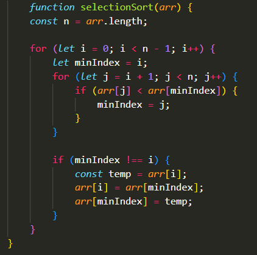

Ordenamiento
Relaciones de equivalencia y orden
Dentro de la programación se utilizan diversos metodos de ordenamiento para organizar los valores de una tabla o grupo de datos de acuerdo a un criterio especifico, puede ser ascendente o descendente.
Este puede lograrse de forma recursiva, en la que una funsión se llama a si misma, o por medio de una iteración por medio de bucles for y while.

 
